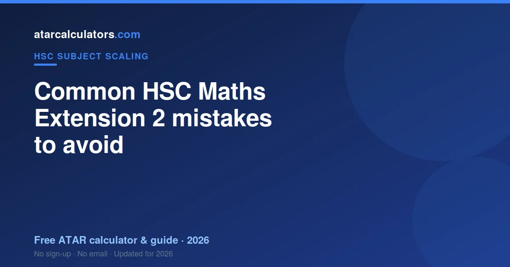
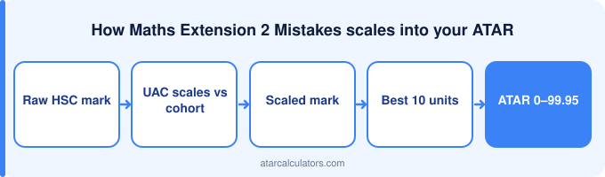

Most HSC Maths Extension 2 marks are lost to avoidable mistakes as well as the sheer difficulty: incomplete working on multi-step problems, weak or unjustified proofs, arithmetic slips, and time pressure on the hardest questions. Careful work, good technique, and practising past papers under timed conditions address the avoidable ones. Showing full working also protects method marks even when a final answer is wrong, which matters greatly on these hard problems.
Key takeaways
- Incomplete working loses method marks.
- Justify each step in proofs.
- Arithmetic slips cost hard-won marks.
- Manage time on the hardest questions.
- Show full working throughout.
- Practise past papers under timed conditions.

Misreading the question
Extension 2 questions run several steps, so misreading the setup wastes the whole chain. Students lose fifteen minutes before realising the first line was wrong.
Poor time management
Extension 2 is long and draining. The failure is fatigue: accuracy collapses in the back half, and a sign error in step six undoes five correct steps.
Ignoring the marking criteria
Extension 2 uses the E1 to E4 band scale over 50 marks. Partial credit on long questions depends entirely on visible working — skip it and a near-complete solution scores almost nothing.
Weak exam technique
The technique failure in Extension 2 is not checking intermediate results. In a six-step question, one unchecked line poisons everything after it.
Maths Extension 2-specific mistakes
In Extension 2 specifically, students often lose marks through incomplete working on multi-step problems, weak or unjustified proofs, arithmetic slips, and time pressure on the hardest questions.
So be aware of these subject-specific pitfalls and practise avoiding them. Knowing where Maths Extension 2 students commonly slip lets you guard against the same errors in your own answers.
Not using past papers
Extension 2 needs long, hard problems attempted cold. Following a solution is not practice — producing one is. The course is 2 units built on Extension 1.
Neglecting internal assessments
Extension 2 assessment is demanding all year and averages with your exam. There is no coasting phase in this course.
How to fix these mistakes
Fixing Extension 2 mistakes means full-length papers under real conditions, because stamina and accuracy over a long paper are themselves the skill.
See how marks scale
As you cut out mistakes and lift your marks, our HSC Maths Extension 2 scaling calculator shows roughly how your marks scale into your ATAR.
Treat the result as indicative, since scaling changes each year. Your rank in the subject is what your scaled mark depends on.
A pre-exam checklist
A short checklist helps you avoid the common Maths Extension 2 mistakes on the day: read each question twice and note the command word, plan your time by the marks, show your working where relevant, and answer every question. Simple habits, applied consistently, protect marks.
So go into the exam with these habits automatic. Most lost marks come from slips under pressure, not gaps in knowledge, so a clear routine keeps you from giving away marks you have earned.
Turning mistakes into marks
The fastest way to lift your Maths Extension 2 marks is often to fix mistakes rather than learn new content. Reviewing your past-paper errors, understanding why you lost each mark, and practising that type of question again recovers marks you were close to earning.
So treat every mistake as information. A mistake you understand and fix is a mark gained, and this kind of targeted review usually improves your marks faster than covering new material.
Common questions
What are the most common HSC Maths Extension 2 mistakes?
Common HSC Maths Extension 2 mistakes include misreading what the question asks, poor time management, ignoring the marking criteria, and weak exam technique. In Extension 2, that often means incomplete working and weak proofs. Practising past papers and marking against the guidelines addresses most of them.
What loses students marks in HSC Maths Extension 2?
Students lose Maths Extension 2 marks mainly to avoidable errors: answering the wrong question, running out of time, not writing to the marking criteria, and weak technique such as not showing working or misjudging answer length, rather than gaps in knowledge.
How do I avoid errors in the HSC Maths Extension 2 exam?
Read each question carefully and note the command word, manage your time by the marks on offer, write to NESA’s marking criteria, and practise past papers under timed conditions. Building these habits protects the marks you have earned.
What do Maths Extension 2 markers look for?
Markers look for answers that do exactly what the question asks and hit the points in the marking criteria. In maths, that includes showing full working, rigorously justifying proofs, and using correct notation. So learning the criteria from NESA’s guidelines and structuring your answers to meet them is key.